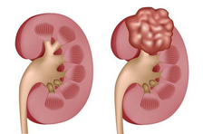

Phẫu thuật nội soi với Robot hỗ trợ điều trị ung thư thận
Ung thư thận là loại ung thư nguy hiểm, có tỉ lệ tử vong cao và đang ngày càng gia tăng. Phẫu thuật là phương pháp điều trị chính của bệnh. Phẫu thuật nội soi điều trị u ung thư thận với Robot hỗ trợ là một bước phát triển mới, mang đến hiệu quả cao, đầy triển vọng cho bệnh nhân.
Vai trò của Progestogen trong phòng ngừa sinh non
Sinh non là tình trạng xảy ra khi trẻ ra đời trước tuần thứ 37 của thai kỳ. Trẻ sinh non thường có nhiều vấn đề về sức khỏe hơn so với những trẻ sinh đủ tháng (sinh từ tuần 39 – 40 của thai kỳ). Theo kết quả của nhiều nghiên cứu, Progestogen có thể giúp phòng ngừa sinh non cho một số phụ nữ.
Rối loạn chuyển hóa ở trẻ sơ sinh: Những điều cần biết
Rối loạn chuyển hóa là một trong những căn bệnh gây tử vong rất cao ở trẻ sơ sinh, nó gây nhiều chứng nguy hiểm. Do vậy để hạn chế tối đa những nguy hiểm của bệnh lý này, các bậc cha mẹ cần phải hiểu rõ bệnh rối loạn chuyển hóa ở người là gì, các biểu hiện khi trẻ sơ sinh mắc bệnh lý rối loạn chuyển hóa.